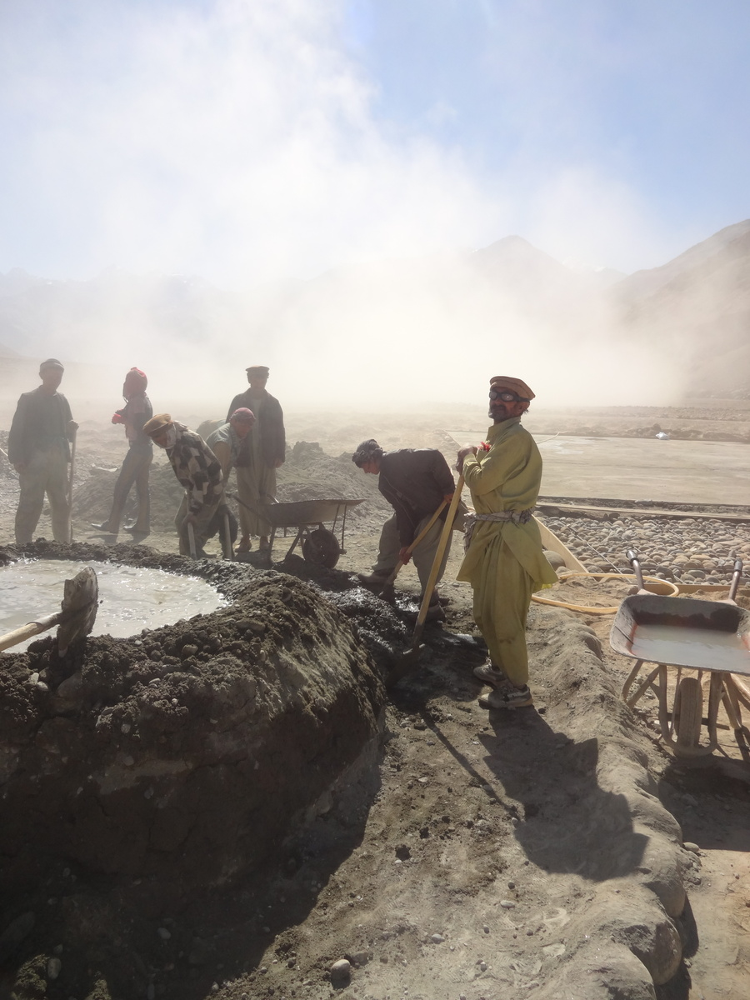
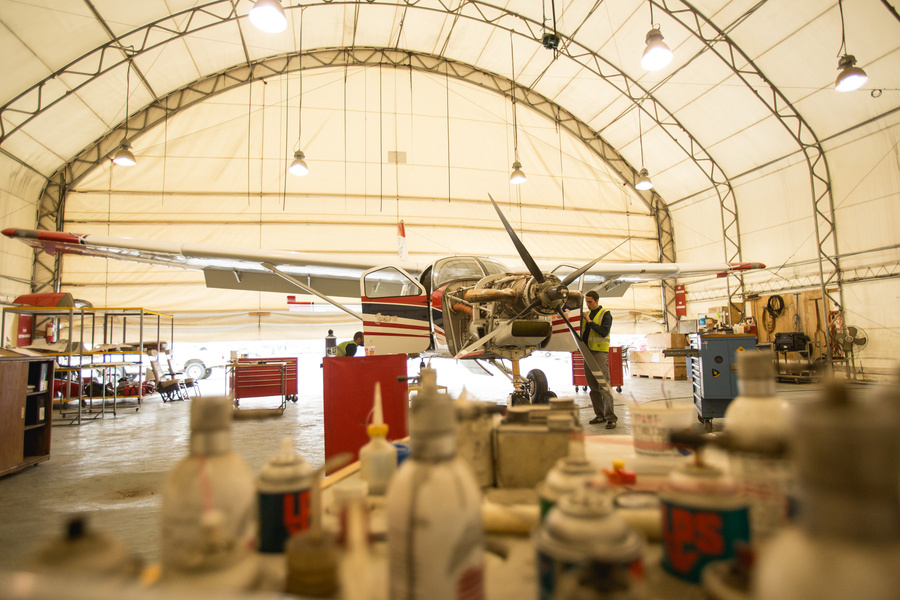

PACTEC
geschrieben am Friday, September 27, 2013
Wer weiss eigentlich was ich do mache in Afghanistan? Viel denked eifach dases chli crazy isch uf Afghanistan zgoh, aber für was? Ich bi grad in Ishkashem - meh däzue spöter imnä Blog post. Naja und denn han ich denkt ich mue mini Organisation - PACTEC mol nöcher beschriebe, was mir ganz praktisch mached:
Ä chlini Amerkig no zu dä Arbet vo dä Afghane im Video: Nur 2 vo dene sind üsi Agstellte, dä Rest isch ä Firma wo mir agstellt händ zum dä Abstellplatz für Flugzüg zbetoniere. Sbetoniere isch relativ müehsam. Sie händ kein Mixer und au sus kei "technischi" Werkzüg, sie misched also vo Hand mit Schufle und bringeds zum Platz wos brucht wird ums dött au vo Hand grad zmache.
Also wiener gseh händ hämmir 2 Standbei:
- Flügerei (NGOs umäflüge, neui Regione erschlüsse - i dem mir neui Airstrips baued). Das isch dä gross Teil vo üserem NGO, mit EU (ECHO) Unterstützig.
- ICT (VSATs - Satellitealage installiere um dä NGOs i dä Regione Internet zgäh - isch meh wienes Buisness - kei EU Unterstützig
Mir händ än Hangar (Bild: Balz):
4 Flüger (2 Kingair, 2 Kodiak) (Bild: Balz):
Mechaniker, wo versueched irgendwas zwürge (Bild: Balz):
Und do gsehnder au mol wie das so usgseht wenn üsi Pilote landed:
Ä churzi beschriebig vo üsem Gasthuus us, zersch allerdings zwei Korrekture:
- dBerge wonich als "über 6000" betitle sind über 7000. Eine dävo isch dä höchst afghanisch Berg, namens Nao Shakh
- Taliban kämpfed nid am fluss entlang sondern chli inere andere Richtig, das hani dött nonid gwüsst ka, das isch gsi bevor i di andere Videos gmacht ha.
Ich hoffe das hed gholfe eu das mol chli verständlicher zmache. Ah und so als chlises Detail. Äs hed öppe 20h dured die Videos ufezläde. Bi recht froh heds dVerbindige nid kappt und dä Strom isch nid usgfalle.
blog comments powered by Disqus